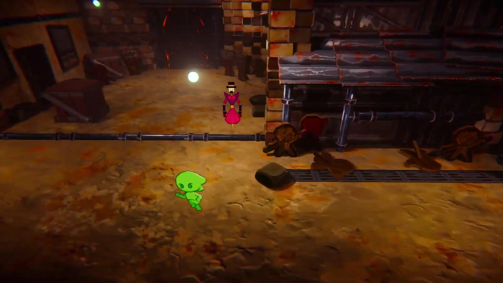
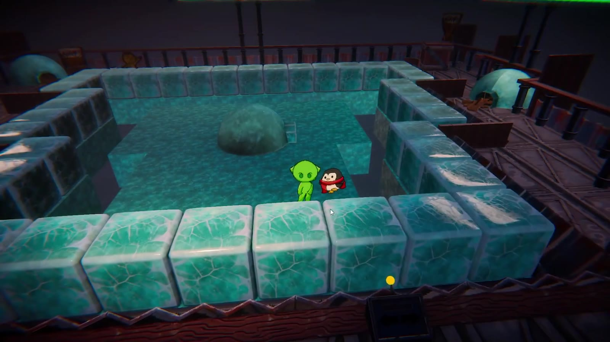
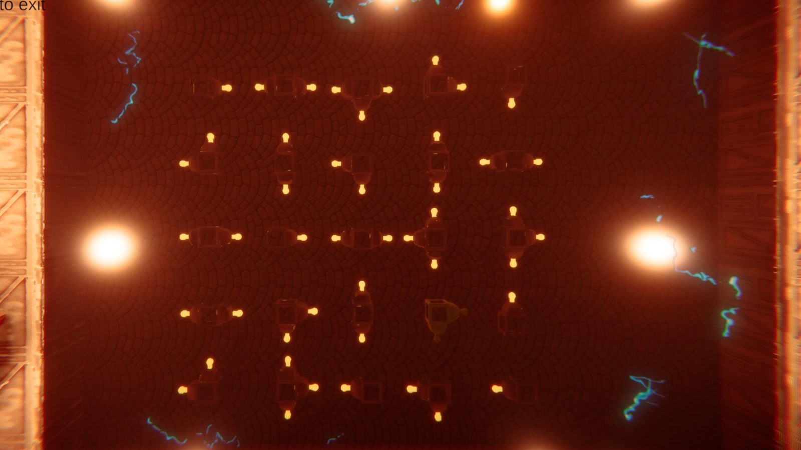
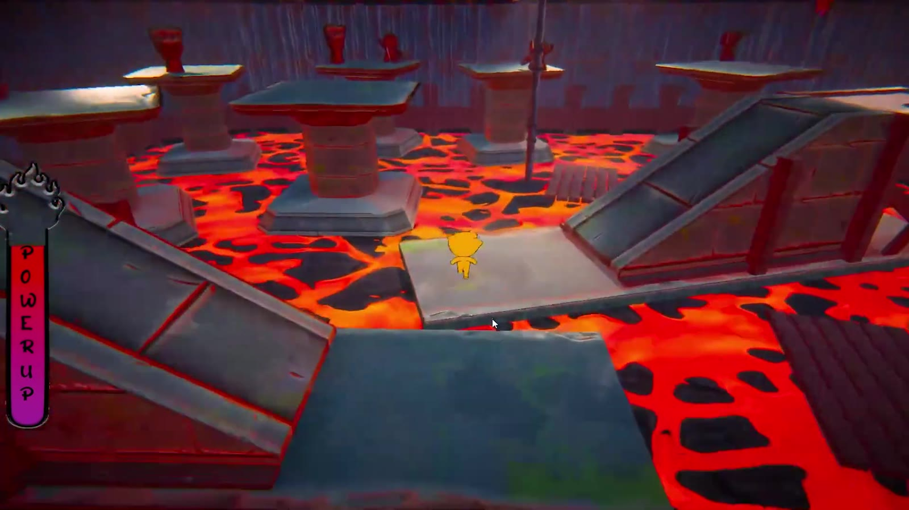
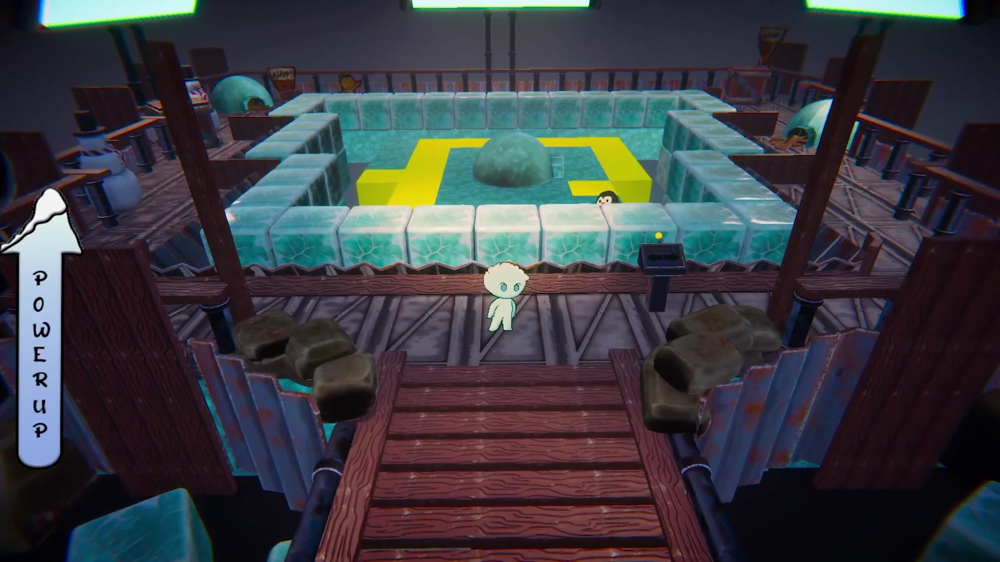
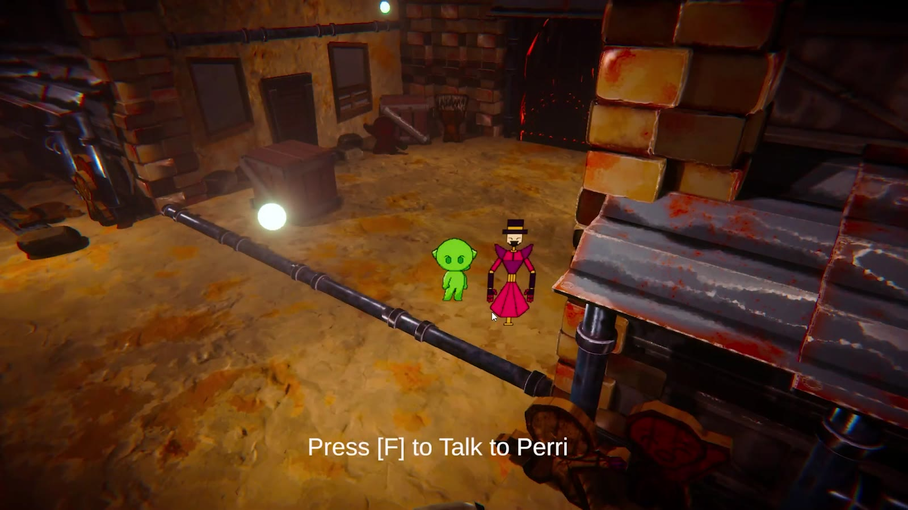
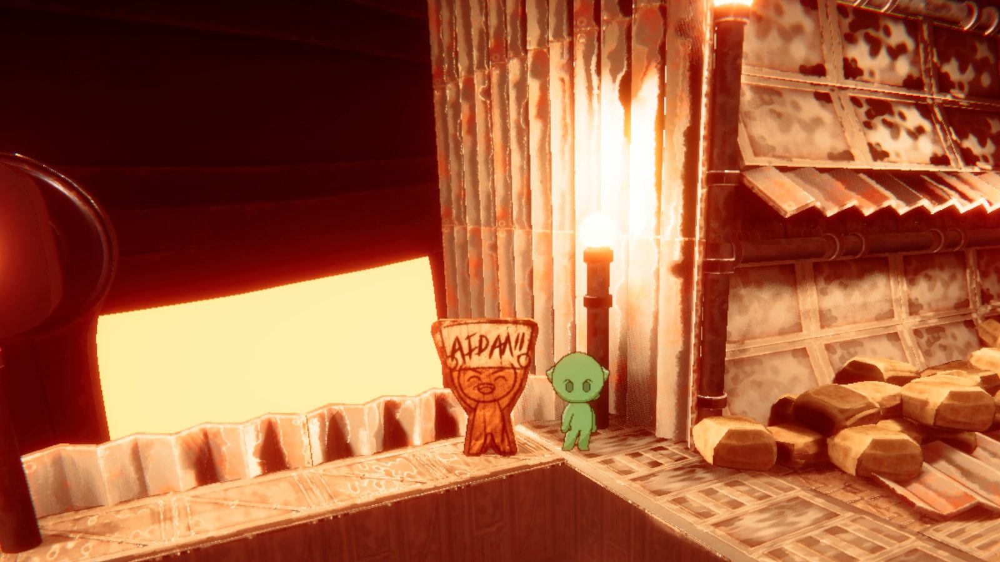

Under Jugger Hollow
- ReleasedFree on itch.io
- 3 Puzzle areasDesigned by me
- 4 CharactersVoice acted
- AccessibleSubtitles and high contrast
Overview
Under Jugger Hollow is a 3D puzzle-adventure. Steven falls into an underground city and helps its residents fix an elevator back to the surface. The game mixes vibrant 3D environments with classic 2D character sprites.
The hub connects three themed levels (electric, fire, and ice) that can be played in any order. Each one is built around puzzles that change the environment around you.
My Role
- Designed the puzzles for the hub, the ice level, and the electric level. Another designer handled the level layouts.
- Came up with the progression system: each level you finish grants a permanent power-up.
- Led most of the playtesting, focused on making puzzles readable and reset cleanly.
- Wrote design documentation for the team.
- Designed and implemented the UI, including subtitles and a high-contrast mode.
- Directed the voice acting for four characters and cut the trailer in Premiere Pro.
- Built small props for the hub with the modular kit.
Structure
One Hub, Three Levels
Players pick their own order from the hub. I designed the puzzles in three of the four areas.




Iteration
Design Decisions
The ideas I pushed for and the problems I solved through playtesting.

Every level you finish makes you stronger.
Three separate levels played in any order could feel like a checklist with no reason to come back.
I pitched permanent power-ups: finishing a level grants a new ability you keep. It gives players a reason to replay levels and try them in a different order.
The penguin always takes the open path.
You summon falling ice blocks to bump a lost penguin toward its igloo. The penguin always moves toward the next open space, so once you spot that rule, you can place blocks to steer it all the way home.
Playtesting focused on making that rule easy to spot and making the puzzle reset cleanly, so players felt free to experiment instead of getting stuck.

Not every game is for everyone, but everyone should be able to play it.
As the UI designer, I added subtitles for all voiced dialogue and a high-contrast mode, so players with hearing or vision needs can still read the world and solve the puzzles.
A silent hero needs a world that talks.
Steven has no voice, so the world had to carry its own personality.
I directed voice acting for four characters, giving the residents life beyond text boxes and giving the city a clear identity.
Reflection
This was my first time designing mechanics that change the environment itself. Watching players in playtests taught me that a good puzzle rule has to be discoverable, and that a clean reset is what makes people willing to experiment.
Final Shots
